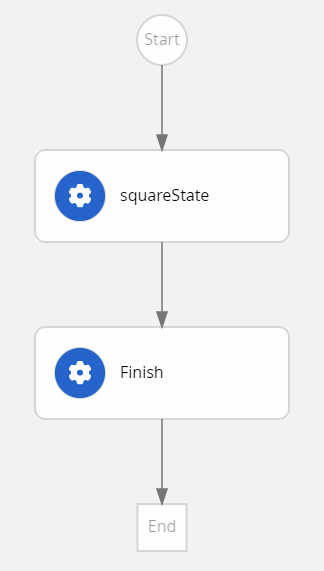

jq Expressions
Each workflow instance is associated with a data model. A data model consists of a JSON object regardless of whether the workflow file contains YAML or JSON. The initial content of the JSON object depends on how the workflow is started. If the workflow is created using the Cloud Event, then the workflow content is taken from the data property. However, if the workflow is started through an HTTP POST request, then the workflow content is taken from the request body.
The workflow expressions in the Serverless Workflow specification are used to interact with the data model. The supported expression languages include JsonPath and jq. jq expression language is the default language. However, you can change the expression language to JsonPath using the expressionLang property.
This document describes the usage of jq expressions in switch state conditions, action function arguments, and data filtering.
Example of jq expressions in switch conditions
The conditions occurring in a switch state enable the workflow designer to select the path that workflow follows based on the data model content.
A condition in a switch state is an expression, which returns a boolean value when evaluated against the data model. If a condition associated with a state transition returns true, then the workflow must follow that transition.
For example, in the serverless-workflow-greeting-quarkus example application, a message is displayed depending on the selected language, that is English or Spanish.
If the value of the language property is English, the constant literal injected on the message property is Hello from, otherwise the constant value injected on the message property is Saludos desde….

The switch state in the serverless-workflow-greeting-quarkus example application contains the following conditions, which in turn contains two jq expressions returning a boolean.
serverless-workflow-greeting-quarkus"dataConditions": [
{
"condition": "${ .language == \"English\" }",
"transition": "GreetInEnglish"
},
{
"condition": "${ .language == \"Spanish\" }",
"transition": "GreetInSpanish"
}
]|
The Serverless Workflow specification requires all the expressions to be embedded within |
Example of jq expressions in function arguments
In the Serverless Workflow specification, you can define workflow functions, which can be invoked several times by the workflow states. Each workflow function call might contain different arguments, which are specified using the function arguments.
For example, you can see the temperature conversion function definition in serverless-workflow-temperature-conversion example application. The temperature conversion function performs OpenAPI invocations to convert Fahrenheit to Celsius. For more information about OpenAPI, see Orchestrating the OpenAPI services.
Following is the subtraction function in serverless-workflow-temperature-conversion example application:
subtraction function in serverless-workflow-temperature-conversion"functions": [
{
"name": "subtraction",
"operation": "specs/subtraction.yaml#doOperation"
}]The arguments in subtraction function are expressed as a JSON object, and the property values of the JSON object are either a string containing an expression or a JSON data type, such as string, number, or boolean.
subtraction function"functionRef":
{
"refName": "subtraction",
"arguments":
{
"leftElement": ".fahrenheit",
"rightElement": ".subtractValue"
}
}In the previous example, the left number is equal to the fahrenheit property (an input number that invokes the workflow), and the right number is equal to the subtractValue property (a constant number that is injected to the workflow model by SetConstants state). Once the expression evaluation is resolved for all properties that contain an expression, the resulting object is passed in the OpenAPI request. Based on the OpenAPI definition, the properties in the JSON object are used as body, path, query, or header of the upcoming REST invocation.
Following is an example of function arguments defined as string that contains an expression, returning a JSON object:
"functionRef": {
"refName": "subtraction",
"arguments": "{leftElement: .fahrenheit, rightElement : .subtractValue}"
}In the previous example, the result of the expression evaluation is the same JSON object than in the first case, which is passed as arguments of the OpenAPI request.
Example of jq expressions in data filtering
The Serverless Workflow specification defines the following filtering mechanisms to select which information must be part of the workflow data model:
-
Action data filters: Select the part of the action result that is merged into the data model, which overrides the properties that share the name with the selected action result.
-
Event data filters: Similar to the action data filters, but apply to the events instead of actions.
-
State data filters: Define the workflow model to the JSON object, which is returned by the expression and discards an existing property.
- State and Action data filter example
-
You can see
serverless-workflow-expression-quarkusexample application, in which actions and state data filters are used.Following is an expression function in
serverless-workflow-expression-quarkusexample application:Example expression function inserverless-workflow-expression-quarkus"functions": [ { "name": "max", "type": "expression", "operation": "{max: .numbers | max_by(.x), min: .numbers | min_by(.y)}" } ]In the previous example, an array of complex numbers (
xis real coordinate andyis imaginary coordinate) is accepted and an expression function is defined to calculate the maximum value ofxand minimum value ofyfor thenumbersarray.Also, the
serverless-workflow-expression-quarkusexample application contains an action data filter defined insidesquareStateaction and a state data filter defined insidefinishstate. The action data filter selects the maximum value ofxto be merged to the workflow model, and the state data filter defines the maximum value as the entire workflow model that is returned as the workflow response.The previous example expression also contains a
maxfunction of type expression and anoperationproperty containing a string of jq expression. This jq expression returns a JSON object, in which themaxproperty is the maximum value of thexcoordinate and theminproperty is the minimum value of theycoordinate.Following is an action data filter in
serverless-workflow-expression-quarkusexample application:Example action data filter inserverless-workflow-expression-quarkus"actions": [ { "name": "maxAction", "functionRef": { "refName": "max" }, "actionDataFilter": { "results" : ".max.x", "toStateData" : ".number" } } ]In case the previous example of action data filter is not added in the
serverless-workflow-expression-quarkus, then the entire JSON object returned by the function is merged into the workflow model. The previous action data filter contains the following properties:-
results, selecting the attribute from the data returned by the action. -
toStateData, indicating the name of the target property inside the workflow model. If the target property does not exist, then a target property is added.
Therefore, after executing the action, the workflow model consists of a
numberproperty, containing the maximum value ofxand the originalnumbersarray. After that, the workflow transitions to thefinishstate.Example state data filter inserverless-workflow-expression-quarkus"name": "finish", "type": "operation", "stateDataFilter": { "input": "{result: .number}" }The original
numbersarray should not be returned as a result of the workflow execution, therefore the final stage consists of a state data filter defining the content of the output model. The output model should contain aresultproperty and the value ofresultproperty should be the maximum number that is stored by the previous state in thenumberproperty.In the previous example, the workflow model is changed by the
inputproperty of the filter, which means that the output model is updated before the state is executed. As a final result, the output model consists of aresultproperty, containing the maximum value ofx. -
- Event data filter example
-
You can find an example of event data filtering in the
serverless-workflow-callback-quarkusexample application.Example event filter"eventRef": "waitEvent", "eventDataFilter": { "data": ".result", "toStateData": ".move" }The previous example of the event filter copies the content of CloudEvent data
resultfield into the workflow modelmovefield.
Found an issue?
If you find an issue or any misleading information, please feel free to report it here. We really appreciate it!